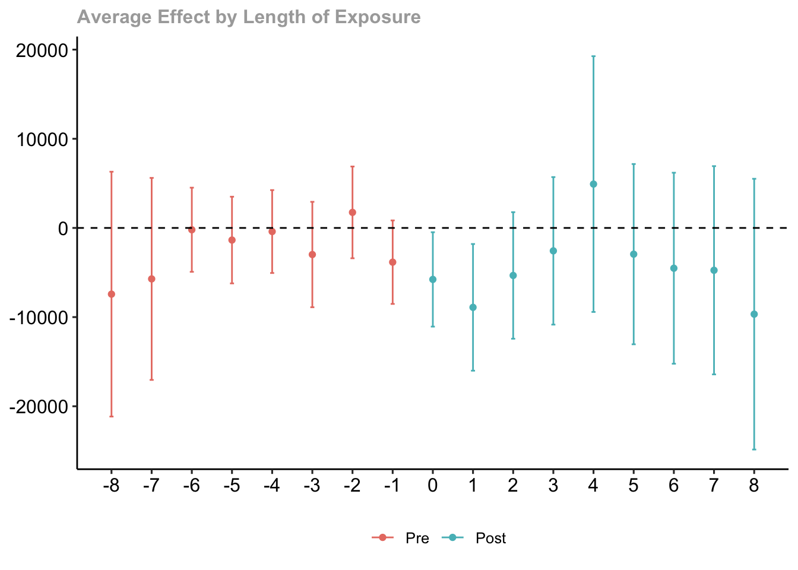
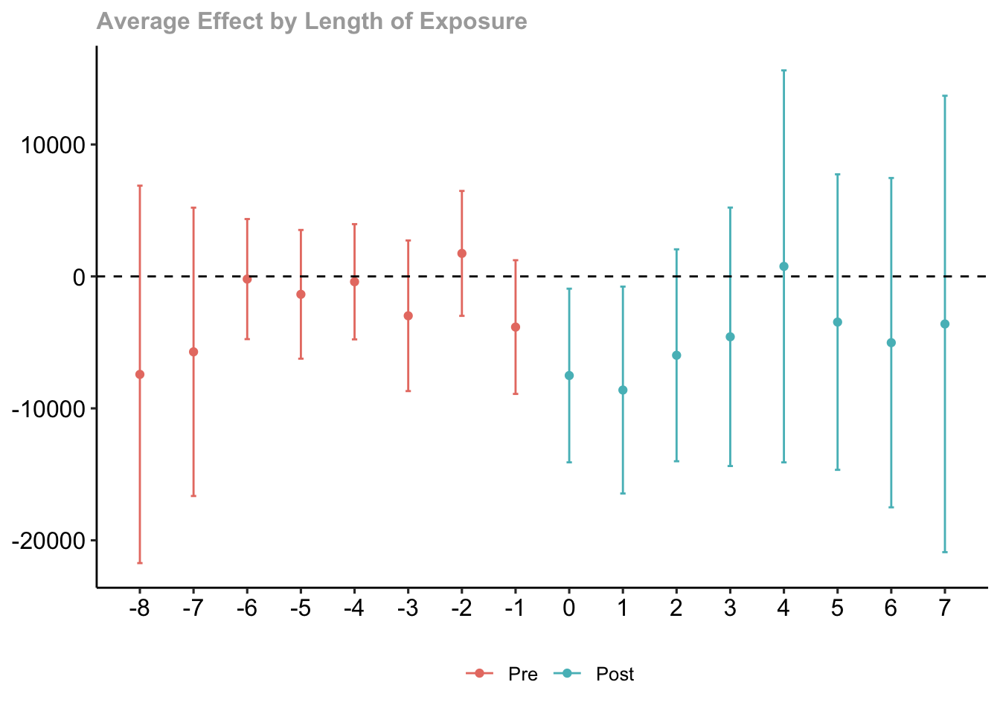
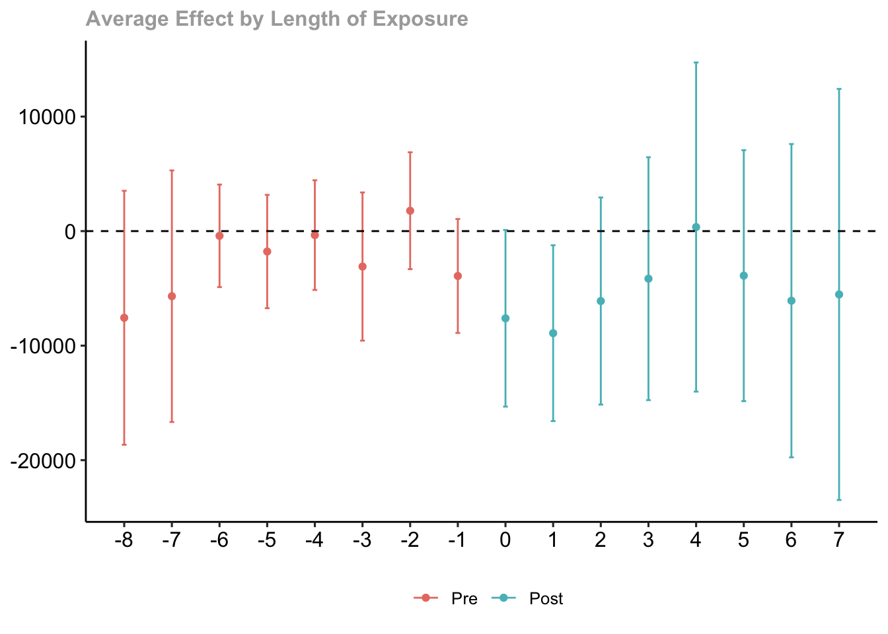

load("job_displacement_data.RData")Exercise 1 Solutions
This exercise will involve estimating causal effect parameters using a difference-in-differences identification strategy that involves conditioning on covariates in the parallel trends assumption and possibly allows for anticipation effects.
In particular, we will use data from the National Longitudinal Study of Youth to learn about causal effects of job displacement (where job displacement roughly means “losing your job through no fault of your own” — a mass layoff is a main example).
To start with, load the data from the file job_displacement_data.RData by running
which will load a data.frame called job_displacement_data. This is what the data looks like
head(job_displacement_data) id year group income female white occ_score
1 7900002 1984 0 31130 1 1 4
2 7900002 1985 0 32200 1 1 3
3 7900002 1986 0 35520 1 1 4
4 7900002 1987 0 43600 1 1 4
5 7900002 1988 0 39900 1 1 4
6 7900002 1990 0 38200 1 1 4You can see that the data contains the following columns:
id- an individual identifieryear- the year for this observationgroup- the year that person lost his/her job.group=0for those that do not lose a job in any period being considered.income- a person’s wage and salary income in this yearfemale- 1 for females, 0 for maleswhite- 1 for white, 0 for non-white
For the results below, we will mainly use the did package which you can install using install.packages("did"), and you can load it using
library(did)Question 1
We will start by computing group-time average treatment effects without including any covariates in the parallel trends assumption.
- Use the
didpackage to compute all available group-time average treatment effects.
Solution.
no_covs <- att_gt(yname="income",
tname="year",
idname="id",
gname="group",
data=job_displacement_data)Warning in pre_process_did(yname = yname, tname = tname, idname = idname, :
Dropped 26 units that were already treated in the first period.summary(no_covs)
Call:
att_gt(yname = "income", tname = "year", idname = "id", gname = "group",
data = job_displacement_data)
Reference: Callaway, Brantly and Pedro H.C. Sant'Anna. "Difference-in-Differences with Multiple Time Periods." Journal of Econometrics, Vol. 225, No. 2, pp. 200-230, 2021. <https://doi.org/10.1016/j.jeconom.2020.12.001>, <https://arxiv.org/abs/1803.09015>
Group-Time Average Treatment Effects:
Group Time ATT(g,t) Std. Error [95% Simult. Conf. Band]
1985 1985 -9455.7583 3928.849 -19523.2686 611.7519
1985 1986 -14981.1547 4450.288 -26384.8302 -3577.4792 *
1985 1987 -6129.2132 4426.257 -17471.3082 5212.8818
1985 1988 -4815.9179 4896.770 -17363.6844 7731.8486
1985 1990 -8011.9173 6203.808 -23908.9127 7885.0782
1985 1991 -8164.4924 6387.425 -24531.9991 8203.0144
1985 1992 -6325.8880 6025.010 -21764.7208 9112.9449
1985 1993 -9669.5840 5818.626 -24579.5658 5240.3978
1986 1985 -1801.9373 2459.484 -8104.2602 4500.3856
1986 1986 -1919.4474 3707.915 -11420.8227 7581.9279
1986 1987 -2596.8189 4170.491 -13283.5262 8089.8883
1986 1988 -2081.7535 6680.419 -19200.0444 15036.5375
1986 1990 -6064.0942 6423.648 -22524.4203 10396.2319
1986 1991 -5903.9636 6107.527 -21554.2430 9746.3157
1986 1992 -6804.4833 6991.690 -24720.3913 11111.4247
1986 1993 -1801.5755 6444.507 -18315.3516 14712.2006
1987 1985 4518.5745 5496.370 -9565.6411 18602.7901
1987 1986 -8012.4879 4574.778 -19735.1617 3710.1858
1987 1987 7048.8565 6777.652 -10318.5887 24416.3017
1987 1988 4489.4666 7005.226 -13461.1283 22440.0616
1987 1990 8004.1361 7482.586 -11169.6733 27177.9455
1987 1991 9475.0656 7658.559 -10149.6662 29099.7974
1987 1992 8533.5413 10156.670 -17492.4944 34559.5770
1987 1993 7881.3931 7911.755 -12392.1433 28154.9295
1988 1985 -8350.7706 4531.211 -19961.8076 3260.2663
1988 1986 -3420.8529 3517.864 -12435.2302 5593.5243
1988 1987 -3617.6742 3584.681 -12803.2676 5567.9193
1988 1988 -1173.8167 3177.852 -9316.9283 6969.2950
1988 1990 280.6263 5806.535 -14598.3731 15159.6258
1988 1991 6099.7271 4032.508 -4233.4041 16432.8583
1988 1992 13737.8166 13555.961 -20998.7579 48474.3911
1988 1993 1688.7819 8351.274 -19711.0037 23088.5675
1990 1985 -5281.5363 3370.146 -13917.3928 3354.3201
1990 1986 3654.1728 2406.760 -2513.0474 9821.3930
1990 1987 5934.8952 3259.932 -2418.5427 14288.3330
1990 1988 1034.1988 3246.808 -7285.6102 9354.0077
1990 1990 -4343.9488 12069.266 -35270.9324 26583.0348
1990 1991 -21910.2102 4915.963 -34507.1572 -9313.2631 *
1990 1992 -15365.9271 4003.331 -25624.2919 -5107.5624 *
1990 1993 -16411.1053 6619.743 -33373.9147 551.7040
1991 1985 891.2874 3637.248 -8429.0067 10211.5814
1991 1986 -2816.6357 3703.990 -12307.9543 6674.6830
1991 1987 -1340.0549 3099.890 -9283.3918 6603.2820
1991 1988 -7025.0387 3740.680 -16610.3718 2560.2944
1991 1990 2568.6223 6132.679 -13146.1067 18283.3514
1991 1991 -12150.6450 4157.136 -22803.1300 -1498.1600 *
1991 1992 1433.9979 4440.016 -9943.3537 12811.3495
1991 1993 -2679.8275 7151.922 -21006.3234 15646.6684
1992 1985 -12110.0572 6608.050 -29042.9046 4822.7902
1992 1986 -3287.5606 2482.838 -9649.7277 3074.6064
1992 1987 2300.0285 3435.828 -6504.1355 11104.1924
1992 1988 -7273.9345 3038.288 -15059.4180 511.5489
1992 1990 7351.4926 4511.623 -4209.3513 18912.3365
1992 1991 -10031.7028 7159.739 -28378.2317 8314.8261
1992 1992 -8990.8504 3937.312 -19080.0468 1098.3459
1992 1993 -8662.6119 14778.779 -46532.6060 29207.3823
1993 1985 -7424.6641 5242.640 -20858.7060 6009.3777
1993 1986 677.9060 3165.276 -7432.9807 8788.7927
1993 1987 1424.1385 3851.520 -8445.2174 11293.4943
1993 1988 4778.2556 1664.394 513.3166 9043.1945 *
1993 1990 -3797.3928 3987.172 -14014.3518 6419.5662
1993 1991 3664.8825 6528.351 -13063.7408 20393.5059
1993 1992 -4108.9169 5764.109 -18879.2013 10661.3676
1993 1993 -22828.3617 6334.279 -39059.6838 -6597.0396 *
---
Signif. codes: `*' confidence band does not cover 0
P-value for pre-test of parallel trends assumption: 0
Control Group: Never Treated, Anticipation Periods: 0
Estimation Method: Doubly Robust- Bonus Question Try to manually calculate \(ATT(g=1992, t=1992)\). Can you calculate exactly the same number as in part (a)?
Solution.
mean(subset(job_displacement_data, group==1992 & year==1992)$income) -
mean(subset(job_displacement_data, group==1992 & year==1991)$income) -
( mean(subset(job_displacement_data, group==0 & year==1992)$income) -
mean(subset(job_displacement_data, group==0 & year==1991)$income) )[1] -8990.85- Aggregate the group-time average treatment effects into an event study and plot the results. What do you notice? Is there evidence against parallel trends?
Solution.
no_covs_es <- aggte(no_covs, type="dynamic")
ggdid(no_covs_es)
- Aggregate the group-time average treatment effects into a single overall treatment effect. How do you interpret the results?
Solution.
no_covs_overall <- aggte(no_covs, type="group")
summary(no_covs_overall)
Call:
aggte(MP = no_covs, type = "group")
Reference: Callaway, Brantly and Pedro H.C. Sant'Anna. "Difference-in-Differences with Multiple Time Periods." Journal of Econometrics, Vol. 225, No. 2, pp. 200-230, 2021. <https://doi.org/10.1016/j.jeconom.2020.12.001>, <https://arxiv.org/abs/1803.09015>
Overall summary of ATT's based on group/cohort aggregation:
ATT Std. Error [ 95% Conf. Int.]
-5631.049 2012.432 -9575.343 -1686.755 *
Group Effects:
Group Estimate Std. Error [95% Simult. Conf. Band]
1985 -8444.241 4814.539 -19626.285 2737.804
1986 -3881.734 5962.137 -17729.142 9965.674
1987 7572.077 6394.582 -7279.708 22423.861
1988 4126.627 4538.301 -6413.838 14667.093
1990 -14507.798 3971.497 -23731.830 -5283.766 *
1991 -4465.492 4645.733 -15255.475 6324.492
1992 -8826.731 8368.655 -28263.415 10609.953
1993 -22828.362 6516.542 -37963.406 -7693.317 *
---
Signif. codes: `*' confidence band does not cover 0
Control Group: Never Treated, Anticipation Periods: 0
Estimation Method: Doubly RobustQuestion 2
A major issue in the job displacement literature concerns a version of anticipation. In particular, there is some empirical evidence that earnings of displaced workers start to decline before they are actually displaced (a rough explanation is that firms where there are mass layoffs typically “struggle” in the time period before the mass layoff actually takes place and this can lead to slower income growth for workers at those firms).
- Is there evidence of anticipation in your results from Question 1?
Solution. There is a moderate amount of evidence for anticipation in the previous results. It hinges on the estimate for event-time equal to -1. It is negative which is in line with the discussion about anticipation above, but it is only marginally statistically significant.
- Repeat parts (a)-(d) of Question 1 allowing for one year of anticipation.
Solution.
# part a
ant_res <- att_gt(yname="income",
tname="year",
idname="id",
gname="group",
data=job_displacement_data,
anticipation=1)Warning in pre_process_did(yname = yname, tname = tname, idname = idname, :
Dropped 26 units that were already treated in the first period. summary(ant_res)
Call:
att_gt(yname = "income", tname = "year", idname = "id", gname = "group",
data = job_displacement_data, anticipation = 1)
Reference: Callaway, Brantly and Pedro H.C. Sant'Anna. "Difference-in-Differences with Multiple Time Periods." Journal of Econometrics, Vol. 225, No. 2, pp. 200-230, 2021. <https://doi.org/10.1016/j.jeconom.2020.12.001>, <https://arxiv.org/abs/1803.09015>
Group-Time Average Treatment Effects:
Group Time ATT(g,t) Std. Error [95% Simult. Conf. Band]
1986 1985 -1801.9373 2510.507 -8020.6868 4416.8123
1986 1986 -3721.3846 3354.231 -12030.1126 4587.3434
1986 1987 -4398.7562 4125.843 -14618.8360 5821.3236
1986 1988 -3883.6907 6549.532 -20107.4636 12340.0821
1986 1990 -7866.0314 6357.763 -23614.7753 7882.7124
1986 1991 -7705.9009 6326.130 -23376.2869 7964.4851
1986 1992 -8606.4205 7105.988 -26208.5862 8995.7452
1986 1993 -3603.5128 6851.179 -20574.4919 13367.4664
1987 1985 4518.5745 5035.607 -7955.0719 16992.2209
1987 1986 -8012.4879 4722.323 -19710.1027 3685.1268
1987 1987 -963.6314 6669.895 -17485.5552 15558.2924
1987 1988 -3523.0213 8033.360 -23422.3690 16376.3264
1987 1990 -8.3518 6165.971 -15282.0112 15265.3075
1987 1991 1462.5776 7722.760 -17667.3863 20592.5416
1987 1992 521.0534 10045.164 -24361.7126 25403.8194
1987 1993 -131.0948 7628.415 -19027.3566 18765.1669
1988 1985 -8350.7706 4772.700 -20173.1728 3471.6315
1988 1986 -3420.8529 3817.997 -12878.3717 6036.6659
1988 1987 -3617.6742 3658.866 -12681.0112 5445.6628
1988 1988 -4791.4908 4613.965 -16220.6922 6637.7105
1988 1990 -3337.0478 8079.735 -23351.2715 16677.1759
1988 1991 2482.0529 6240.795 -12976.9512 17941.0570
1988 1992 10120.1424 14316.999 -25344.3371 45584.6220
1988 1993 -1928.8923 7753.327 -21134.5732 17276.7886
1990 1985 -5281.5363 3575.400 -14138.1211 3575.0484
1990 1986 3654.1728 2465.173 -2452.2809 9760.6264
1990 1987 5934.8952 3056.263 -1635.7394 13505.5297
1990 1988 1034.1988 3426.162 -7452.7106 9521.1081
1990 1990 -4343.9488 12071.426 -34245.9457 25558.0481
1990 1991 -21910.2102 4710.307 -33578.0608 -10242.3595 *
1990 1992 -15365.9271 3925.822 -25090.5376 -5641.3167 *
1990 1993 -16411.1053 6439.150 -32361.4527 -460.7579 *
1991 1985 891.2874 3734.414 -8359.1872 10141.7619
1991 1986 -2816.6357 3659.722 -11882.0929 6248.8216
1991 1987 -1340.0549 2985.477 -8735.3480 6055.2382
1991 1988 -7025.0387 3735.494 -16278.1900 2228.1126
1991 1990 2568.6223 6153.690 -12674.6150 17811.8596
1991 1991 -9582.0227 8651.545 -31012.6685 11848.6232
1991 1992 4002.6202 8349.920 -16680.8757 24686.1161
1991 1993 -111.2052 9932.256 -24714.2869 24491.8766
1992 1985 -12110.0572 6878.208 -29147.9911 4927.8767
1992 1986 -3287.5606 2499.115 -9478.0895 2902.9683
1992 1987 2300.0285 3424.019 -6181.5711 10781.6280
1992 1988 -7273.9345 2707.619 -13980.9479 -566.9211 *
1992 1990 7351.4926 4336.903 -3391.4021 18094.3873
1992 1991 -10031.7028 7986.470 -29814.8986 9751.4931
1992 1992 -19022.5532 7182.699 -36814.7390 -1230.3674 *
1992 1993 -18694.3146 8151.401 -38886.0593 1497.4301
1993 1985 -7424.6641 5313.390 -20586.4033 5737.0751
1993 1986 677.9060 3312.290 -7526.9301 8882.7421
1993 1987 1424.1385 3841.094 -8090.5930 10938.8700
1993 1988 4778.2556 1619.709 766.0932 8790.4180 *
1993 1990 -3797.3928 4264.426 -14360.7562 6765.9706
1993 1991 3664.8825 6656.513 -12823.8920 20153.6571
1993 1992 -4108.9169 5552.686 -17863.4135 9645.5797
1993 1993 -26937.2785 5381.705 -40268.2407 -13606.3164 *
---
Signif. codes: `*' confidence band does not cover 0
P-value for pre-test of parallel trends assumption: 0
Control Group: Never Treated, Anticipation Periods: 1
Estimation Method: Doubly Robust # part b
mean(subset(job_displacement_data, group==1992 & year==1992)$income) -
mean(subset(job_displacement_data, group==1992 & year==1990)$income) -
( mean(subset(job_displacement_data, group==0 & year==1992)$income) -
mean(subset(job_displacement_data, group==0 & year==1990)$income) )[1] -19022.55 # part c
ant_es <- aggte(ant_res, type="dynamic")
ggdid(ant_es)
# part d
ant_overall <- aggte(ant_res, type="group")
summary(ant_overall)
Call:
aggte(MP = ant_res, type = "group")
Reference: Callaway, Brantly and Pedro H.C. Sant'Anna. "Difference-in-Differences with Multiple Time Periods." Journal of Econometrics, Vol. 225, No. 2, pp. 200-230, 2021. <https://doi.org/10.1016/j.jeconom.2020.12.001>, <https://arxiv.org/abs/1803.09015>
Overall summary of ATT's based on group/cohort aggregation:
ATT Std. Error [ 95% Conf. Int.]
-7711.634 2277.674 -12175.79 -3247.475 *
Group Effects:
Group Estimate Std. Error [95% Simult. Conf. Band]
1986 -5683.6710 5492.573 -17651.37 6284.028
1987 -440.4114 6576.577 -14770.03 13889.211
1988 508.9529 6005.721 -12576.84 13594.743
1990 -14507.7979 4373.655 -24037.50 -4978.095 *
1991 -1896.8692 8436.603 -20279.28 16485.541
1992 -18858.4339 4258.107 -28136.37 -9580.498 *
1993 -26937.2785 5380.834 -38661.51 -15213.046 *
---
Signif. codes: `*' confidence band does not cover 0
Control Group: Never Treated, Anticipation Periods: 1
Estimation Method: Doubly RobustQuestion 3
Now, let’s suppose that we think that parallel trends holds only after we condition on a person sex and race (in reality, you could think of including many other variables in the parallel trends assumption, but let’s just keep it simple). In my view, I think allowing for anticipation is desirable in this setting too, so let’s keep allowing for one year of anticipation.
- Answer parts (a), (c), and (d) of Question 1 but including
sexandwhiteas covariates.
Solution.
# part a
covs_res <- att_gt(yname="income",
tname="year",
idname="id",
gname="group",
data=job_displacement_data,
anticipation=1,
xformla=~female + white)Warning in pre_process_did(yname = yname, tname = tname, idname = idname, :
Dropped 26 units that were already treated in the first period.Warning in pre_process_did(yname = yname, tname = tname, idname = idname, : Be aware that there are some small groups in your dataset.
Check groups: 1992,1993. summary(covs_res)
Call:
att_gt(yname = "income", tname = "year", idname = "id", gname = "group",
xformla = ~female + white, data = job_displacement_data,
anticipation = 1)
Reference: Callaway, Brantly and Pedro H.C. Sant'Anna. "Difference-in-Differences with Multiple Time Periods." Journal of Econometrics, Vol. 225, No. 2, pp. 200-230, 2021. <https://doi.org/10.1016/j.jeconom.2020.12.001>, <https://arxiv.org/abs/1803.09015>
Group-Time Average Treatment Effects:
Group Time ATT(g,t) Std. Error [95% Simult. Conf. Band]
1986 1985 -1724.0034 2610.021 -8185.7249 4737.7180
1986 1986 -4258.8672 3377.749 -12621.2825 4103.5481
1986 1987 -4861.6136 3608.334 -13794.8946 4071.6675
1986 1988 -4729.6121 5957.055 -19477.7061 10018.4820
1986 1990 -8685.9902 5868.777 -23215.5326 5843.5523
1986 1991 -8753.8554 6008.320 -23628.8693 6121.1584
1986 1992 -9530.3951 6715.107 -26155.2267 7094.4364
1986 1993 -4727.7652 6115.538 -19868.2230 10412.6926
1987 1985 4559.7049 5038.744 -7914.8953 17034.3051
1987 1986 -8337.6804 4703.942 -19983.3980 3308.0372
1987 1987 -1244.4854 7021.250 -18627.2454 16138.2746
1987 1988 -4009.1142 8366.520 -24722.4076 16704.1793
1987 1990 -483.2506 6708.925 -17092.7780 16126.2769
1987 1991 865.8558 7813.068 -18477.2361 20208.9477
1987 1992 -1.1369 9577.482 -23712.4543 23710.1805
1987 1993 -760.5834 7527.043 -19395.5543 17874.3875
1988 1985 -8427.9592 4822.325 -20366.7628 3510.8444
1988 1986 -3208.6634 3724.638 -12429.8836 6012.5568
1988 1987 -3540.3348 3945.175 -13307.5450 6226.8754
1988 1988 -4496.7178 4811.661 -16409.1193 7415.6837
1988 1990 -2886.2705 7832.537 -22277.5631 16505.0221
1988 1991 3026.1289 6270.757 -12498.6108 18550.8685
1988 1992 10422.7498 14777.938 -26163.5212 47009.0207
1988 1993 -1710.3233 7754.067 -20907.3459 17486.6994
1990 1985 -5423.4224 3417.813 -13885.0246 3038.1798
1990 1986 4124.3571 2632.808 -2393.7811 10642.4952
1990 1987 6034.5096 3105.498 -1653.8835 13722.9028
1990 1988 1473.8450 3460.897 -7094.4222 10042.1122
1990 1990 -4087.0904 12498.250 -35029.4572 26855.2764
1990 1991 -21451.7077 4620.211 -32890.1309 -10013.2844 *
1990 1992 -15350.4684 3875.172 -24944.3711 -5756.5657 *
1990 1993 -16489.8656 6108.129 -31611.9797 -1367.7516 *
1991 1985 787.4357 3610.954 -8152.3318 9727.2032
1991 1986 -2463.7125 3948.082 -12238.1202 7310.6952
1991 1987 -1271.9440 3074.521 -8883.6469 6339.7589
1991 1988 -6698.7830 3898.814 -16351.2182 2953.6522
1991 1990 2753.4298 6145.131 -12460.2915 17967.1511
1991 1991 -9246.2829 8327.981 -29864.1642 11371.5984
1991 1992 4013.8999 8013.190 -15824.6420 23852.4418
1991 1993 -162.2495 9820.471 -24475.1430 24150.6440
1992 1985 -12170.1207 6797.573 -28999.1158 4658.8743
1992 1986 -3584.4939 2540.090 -9873.0856 2704.0979
1992 1987 2598.5246 3718.927 -6608.5560 11805.6052
1992 1988 -7330.9148 2942.648 -14616.1348 -45.6947 *
1992 1990 7649.2124 4552.592 -3621.8042 18920.2289
1992 1991 -10130.9141 7901.182 -29692.1554 9430.3271
1992 1992 -19327.7970 6450.438 -35297.3773 -3358.2168 *
1992 1993 -19410.4421 8588.198 -40672.5530 1851.6688
1993 1985 -7391.9287 5113.829 -20052.4184 5268.5611
1993 1986 50.7636 3414.911 -8403.6545 8505.1818
1993 1987 1618.3041 3731.708 -7620.4193 10857.0276
1993 1988 4453.4544 1820.107 -52.6493 8959.5581
1993 1990 -3630.4984 4063.599 -13690.8970 6429.9002
1993 1991 3439.7874 6847.993 -13514.0350 20393.6098
1993 1992 -4123.7577 5671.742 -18165.4939 9917.9786
1993 1993 -27304.4090 5766.634 -41581.0710 -13027.7471 *
---
Signif. codes: `*' confidence band does not cover 0
P-value for pre-test of parallel trends assumption: 0
Control Group: Never Treated, Anticipation Periods: 1
Estimation Method: Doubly Robust # part c
covs_es <- aggte(covs_res, type="dynamic")
ggdid(covs_es) # part d
covs_overall <- aggte(covs_res, type="group")
summary(covs_overall)
Call:
aggte(MP = covs_res, type = "group")
Reference: Callaway, Brantly and Pedro H.C. Sant'Anna. "Difference-in-Differences with Multiple Time Periods." Journal of Econometrics, Vol. 225, No. 2, pp. 200-230, 2021. <https://doi.org/10.1016/j.jeconom.2020.12.001>, <https://arxiv.org/abs/1803.09015>
Overall summary of ATT's based on group/cohort aggregation:
ATT Std. Error [ 95% Conf. Int.]
-7931.965 2255.225 -12352.12 -3511.806 *
Group Effects:
Group Estimate Std. Error [95% Simult. Conf. Band]
1986 -6506.8712 5043.459 -17580.15 4566.410
1987 -938.7858 6984.757 -16274.33 14396.755
1988 871.1134 5965.227 -12225.98 13968.203
1990 -14344.7830 4248.604 -23672.90 -5016.664 *
1991 -1798.2108 8373.697 -20183.27 16586.848
1992 -19369.1196 4292.994 -28794.70 -9943.539 *
1993 -27304.4090 5654.818 -39719.97 -14888.846 *
---
Signif. codes: `*' confidence band does not cover 0
Control Group: Never Treated, Anticipation Periods: 1
Estimation Method: Doubly Robust- By default, the
didpackage uses the doubly robust approach that we discussed during our session. How do the results change if you use a regression approach or propensity score re-weighting?
For simplicity, I am just going to show the overall results when using the regression approach and the propensity score re-weighting approach.
reg_res <- att_gt(yname="income",
tname="year",
idname="id",
gname="group",
data=job_displacement_data,
anticipation=1,
xformla=~female + white,
est_method="reg")Warning in pre_process_did(yname = yname, tname = tname, idname = idname, :
Dropped 26 units that were already treated in the first period.Warning in pre_process_did(yname = yname, tname = tname, idname = idname, : Be aware that there are some small groups in your dataset.
Check groups: 1992,1993. summary(aggte(reg_res, type="group"))
Call:
aggte(MP = reg_res, type = "group")
Reference: Callaway, Brantly and Pedro H.C. Sant'Anna. "Difference-in-Differences with Multiple Time Periods." Journal of Econometrics, Vol. 225, No. 2, pp. 200-230, 2021. <https://doi.org/10.1016/j.jeconom.2020.12.001>, <https://arxiv.org/abs/1803.09015>
Overall summary of ATT's based on group/cohort aggregation:
ATT Std. Error [ 95% Conf. Int.]
-7919.691 2372.856 -12570.4 -3268.978 *
Group Effects:
Group Estimate Std. Error [95% Simult. Conf. Band]
1986 -6434.0559 4969.302 -17652.45 4784.333
1987 -912.7508 6642.287 -15907.97 14082.465
1988 862.1890 5987.271 -12654.30 14378.681
1990 -14343.8838 4335.033 -24130.39 -4557.381 *
1991 -1796.2167 8510.307 -21008.56 17416.124
1992 -19441.0738 4533.507 -29675.64 -9206.509 *
1993 -27302.1029 5807.749 -40413.32 -14190.888 *
---
Signif. codes: `*' confidence band does not cover 0
Control Group: Never Treated, Anticipation Periods: 1
Estimation Method: Outcome Regression ipw_res <- att_gt(yname="income",
tname="year",
idname="id",
gname="group",
data=job_displacement_data,
anticipation=1,
xformla=~female + white,
est_method="ipw")Warning in pre_process_did(yname = yname, tname = tname, idname = idname, : Dropped 26 units that were already treated in the first period.
Warning in pre_process_did(yname = yname, tname = tname, idname = idname, : Be aware that there are some small groups in your dataset.
Check groups: 1992,1993. summary(aggte(ipw_res, type="group"))
Call:
aggte(MP = ipw_res, type = "group")
Reference: Callaway, Brantly and Pedro H.C. Sant'Anna. "Difference-in-Differences with Multiple Time Periods." Journal of Econometrics, Vol. 225, No. 2, pp. 200-230, 2021. <https://doi.org/10.1016/j.jeconom.2020.12.001>, <https://arxiv.org/abs/1803.09015>
Overall summary of ATT's based on group/cohort aggregation:
ATT Std. Error [ 95% Conf. Int.]
-7931.69 2192.313 -12228.54 -3634.836 *
Group Effects:
Group Estimate Std. Error [95% Simult. Conf. Band]
1986 -6506.2796 5184.871 -17726.45 4713.890
1987 -938.6980 6827.736 -15714.06 13836.665
1988 871.1522 6509.455 -13215.44 14957.748
1990 -14345.0498 4775.552 -24679.44 -4010.656 *
1991 -1798.1771 8196.034 -19534.57 15938.212
1992 -19368.1395 4172.162 -28396.79 -10339.493 *
1993 -27303.3746 5704.185 -39647.35 -14959.400 *
---
Signif. codes: `*' confidence band does not cover 0
Control Group: Never Treated, Anticipation Periods: 1
Estimation Method: Inverse Probability WeightingYou can see that the results are very similar across estimation strategies in this example.
Question 4
Finally, the data that we have contains a variable called occ_score which is roughly a variable that measures the occupation “quality”. Suppose that we (i) are interested in including a person’s occupation in the parallel trends assumption, (ii) are satisfied that occ_score sufficiently summarizes a person’s occupation, but (iii) are worried that a person’s occupation is a “bad control” (in the sense that it could be affected by the treatment).
- Repeat parts (a), (c), and (d) of Question 1 but including
occ_scorein the parallel trends assumption. Continue to allow for 1 year of anticipation effects.
Solution.
# part a
occ_res <- att_gt(yname="income",
tname="year",
idname="id",
gname="group",
data=job_displacement_data,
anticipation=1,
xformla=~female + white + occ_score)Warning in pre_process_did(yname = yname, tname = tname, idname = idname, :
Dropped 26 units that were already treated in the first period.Warning in pre_process_did(yname = yname, tname = tname, idname = idname, : Be aware that there are some small groups in your dataset.
Check groups: 1992,1993. summary(occ_res)
Call:
att_gt(yname = "income", tname = "year", idname = "id", gname = "group",
xformla = ~female + white + occ_score, data = job_displacement_data,
anticipation = 1)
Reference: Callaway, Brantly and Pedro H.C. Sant'Anna. "Difference-in-Differences with Multiple Time Periods." Journal of Econometrics, Vol. 225, No. 2, pp. 200-230, 2021. <https://doi.org/10.1016/j.jeconom.2020.12.001>, <https://arxiv.org/abs/1803.09015>
Group-Time Average Treatment Effects:
Group Time ATT(g,t) Std. Error [95% Simult. Conf. Band]
1986 1985 -2195.2252 2572.776 -8769.3868 4378.9364
1986 1986 -4943.5726 3428.785 -13705.0771 3817.9319
1986 1987 -5648.5248 4007.522 -15888.8648 4591.8152
1986 1988 -5486.8776 6228.904 -21403.4695 10429.7144
1986 1990 -9355.8673 5990.491 -24663.2462 5951.5116
1986 1991 -9341.8431 5774.297 -24096.7875 5413.1014
1986 1992 -10108.9739 6304.287 -26218.1903 6000.2425
1986 1993 -5529.8989 6315.439 -21667.6102 10607.8124
1987 1985 3820.8904 5220.176 -9518.1172 17159.8980
1987 1986 -8340.0613 4553.396 -19975.2622 3295.1397
1987 1987 -1140.5127 6858.919 -18666.9681 16385.9428
1987 1988 -3872.3621 8232.391 -24908.4229 17163.6987
1987 1990 -245.3064 6926.789 -17945.1884 17454.5756
1987 1991 1163.8056 7135.689 -17069.8752 19397.4864
1987 1992 357.4786 9445.454 -23778.2979 24493.2552
1987 1993 -573.4507 7037.227 -18555.5340 17408.6327
1988 1985 -9335.5672 4651.088 -21220.3983 2549.2639
1988 1986 -3340.6154 3743.783 -12907.0280 6225.7972
1988 1987 -3382.3715 3578.722 -12527.0057 5762.2627
1988 1988 -4249.2023 4541.480 -15853.9537 7355.5491
1988 1990 -2636.2457 7960.259 -22976.9322 17704.4408
1988 1991 3600.9662 6426.575 -12820.7286 20022.6611
1988 1992 10870.4646 14803.996 -26957.8834 48698.8125
1988 1993 -1193.1813 8148.783 -22015.6000 19629.2374
1990 1985 -6306.9131 3335.834 -14830.9006 2217.0744
1990 1986 3619.3463 2661.838 -3182.3933 10421.0859
1990 1987 6300.9857 2949.256 -1235.1873 13837.1587
1990 1988 1669.2779 3559.193 -7425.4559 10764.0117
1990 1990 -3975.3758 12315.819 -35445.7368 27494.9853
1990 1991 -21181.3377 4801.704 -33451.0329 -8911.6424 *
1990 1992 -15120.4248 3860.175 -24984.2511 -5256.5986 *
1990 1993 -16136.7404 6331.606 -32315.7634 42.2827
1991 1985 275.2798 3816.947 -9478.0855 10028.6451
1991 1986 -2972.7479 3680.436 -12377.2907 6431.7948
1991 1987 -1061.8712 3164.474 -9147.9878 7024.2454
1991 1988 -6533.7425 3834.799 -16332.7263 3265.2413
1991 1990 2973.9229 5894.615 -12088.4676 18036.3134
1991 1991 -8630.5915 8106.604 -29345.2316 12084.0486
1991 1992 4461.4852 7995.022 -15968.0312 24891.0015
1991 1993 625.5103 10242.289 -25546.4004 26797.4210
1992 1985 -11419.6688 6317.651 -27563.0339 4723.6964
1992 1986 -3525.3900 2655.872 -10311.8842 3261.1041
1992 1987 2689.5473 3482.740 -6209.8272 11588.9218
1992 1988 -7336.2075 2910.269 -14772.7588 100.3439
1992 1990 7673.1535 4658.910 -4231.6637 19577.9708
1992 1991 -10337.3059 8191.067 -31267.7720 10593.1602
1992 1992 -19895.1794 7230.949 -38372.2766 -1418.0821 *
1992 1993 -19597.7636 7932.929 -39868.6142 673.0871
1993 1985 -7566.2072 5344.233 -21222.2171 6089.8027
1993 1986 50.1090 3377.919 -8581.4194 8681.6375
1993 1987 1781.7444 3606.894 -7434.8785 10998.3672
1993 1988 4377.3771 1671.520 106.1756 8648.5786 *
1993 1990 -3777.5137 4117.726 -14299.4537 6744.4262
1993 1991 3464.8956 6864.092 -14074.7786 21004.5698
1993 1992 -4041.1832 5934.399 -19205.2317 11122.8654
1993 1993 -27091.4909 5876.152 -42106.7019 -12076.2800 *
---
Signif. codes: `*' confidence band does not cover 0
P-value for pre-test of parallel trends assumption: 0
Control Group: Never Treated, Anticipation Periods: 1
Estimation Method: Doubly Robust # part c
occ_es <- aggte(occ_res, type="dynamic")
ggdid(occ_es)
# part d
occ_overall <- aggte(occ_res, type="group")
summary(occ_overall)
Call:
aggte(MP = occ_res, type = "group")
Reference: Callaway, Brantly and Pedro H.C. Sant'Anna. "Difference-in-Differences with Multiple Time Periods." Journal of Econometrics, Vol. 225, No. 2, pp. 200-230, 2021. <https://doi.org/10.1016/j.jeconom.2020.12.001>, <https://arxiv.org/abs/1803.09015>
Overall summary of ATT's based on group/cohort aggregation:
ATT Std. Error [ 95% Conf. Int.]
-7873.709 2092.775 -11975.47 -3771.945 *
Group Effects:
Group Estimate Std. Error [95% Simult. Conf. Band]
1986 -7202.2226 5369.197 -18626.51 4222.061
1987 -718.3913 6611.193 -14785.33 13348.546
1988 1278.5603 6120.556 -11744.42 14301.545
1990 -14103.4696 4429.621 -23528.58 -4678.363 *
1991 -1181.1987 8643.673 -19572.74 17210.338
1992 -19746.4715 4686.194 -29717.50 -9775.442 *
1993 -27091.4909 6325.208 -40549.92 -13633.057 *
---
Signif. codes: `*' confidence band does not cover 0
Control Group: Never Treated, Anticipation Periods: 1
Estimation Method: Doubly Robust- What additional assumptions (with respect to occupation) do you need to make in order to rationalize this approach?